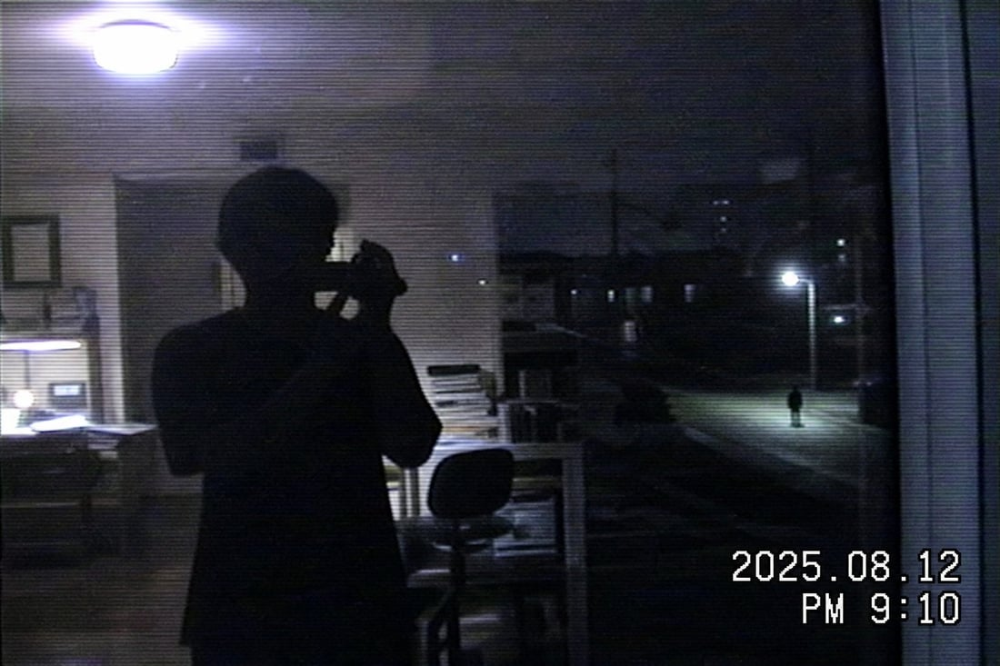
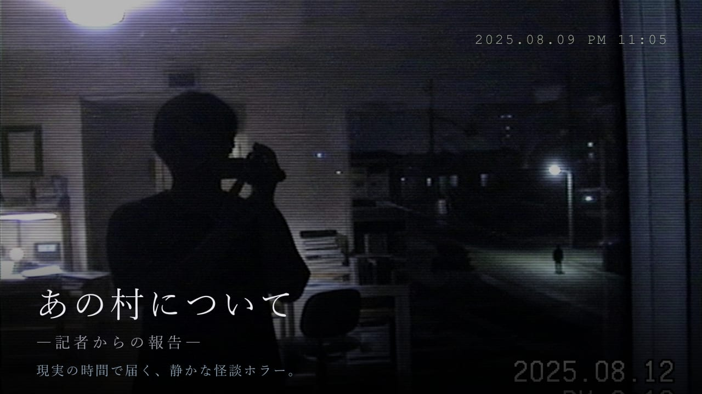

予告
今度の便りは、拝み屋から届く。
読むことしか、できなかったあなたに。
もう一度、報告が届きます。
人物
拝み屋
死んだ人の名前を呼んで、その人の代わりに返事をする。
それで金をもらっている。
軽口が多く、締めるときだけ声が低くなる。
名前は、まだ明かしません。
断片

読みかた
形式は、第一章と同じです。
実際の時間に沿って届きます
まとめ読みはできません。続きは、明日を待つしかありません。
返信はできません
入力欄は最初から使えません。できるのは、読むことだけです。
静かなホラーです
驚かせる演出、大音量、突然現れる顔は使いません。写真は第一章と同じ、古い家庭用ビデオの質感で統一します。
概要
| 名称 | あの人について『あの村について ―記者からの報告―』第二章 |
|---|---|
| 形式 | チャット形式・実時間配信のストーリー |
| 対応 | iPhone（iOS 16.4以降）・同じアプリ内で配信 |
| 配信 | 近日時期は未定です。決まり次第、このページと App Store でお知らせします。 |
| 価格 | 第一章の購読でお読みいただける予定です別売りの予定はありません。 |
| 開発 | Ito Kento |
まだ第一章を読んでいない方へ
先に、記者からの報告を。
第二章は、第一章の最後の一通の、その先から始まります。
前日譚は購読なしで読めます。

あの村について―記者からの報告― 第一章
第一章のページへ →